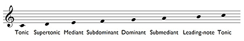

Degrees of the Scale
The numbers and names of the notes of the scale are referred to in
multiple places and are worth knowing.
- First - Tonic, or key note
- Second - Supertonic
- Third - Mediant
- Fourth - Subdominant
- Fifth - Dominant
- Sixth - Submediant
- Seventh - Leading note

Back to top